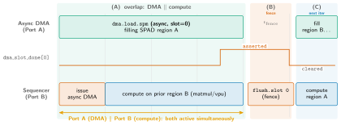

Lab 3: The Data-Movement Engine¶
ECE 4950/6950 AI Hardware, Fall 2026
School of Electrical and Computer Engineering, Cornell University
Lab 3: The Data-Movement Engine
Due: TBD, Fall 2026
Late submission: 4% penalty per day; cannot be late by more than 6 days.
Ported verbatim; technical claims under review
This handout was ported from its LaTeX source content-preserving: the prose, listings, figures, and exercises are carried over as written, with no rewrite. Its technical claims have not been re-validated against the current RTL and ISA and are under review, tracked in issue #385. Treat module names, instruction mnemonics, and datapath descriptions on this page as handout text, not as a reference for the hardware as it stands today. The authoritative sources are the ISA Reference and the ABI Register Map.
On this page specifically: every part below tells you to write the
address generation and row-walk in sequencer.sv, which has been
retired. It is in no live build and does not elaborate against the current
MXU; the canonical dispatch is tile_sequencer.sv. Do not start this lab
against the file as written. The dma.* mnemonics used below likewise match
no generation of the ISA, and the .mi opcode range 0x48–0x4E is
inherited from that retired file: only 0x48 and 0x4C exist, both
reserved. See the generated ISA Reference.
Introduction¶
By the end of Lab 2 the accelerator could do the arithmetic of a neural network: the vector unit for element-wise math and the matrix unit for matrix products. Both engines read their operands from the on-chip scratchpad, and the scratchpad is small. The weights and activations of a real model live in off-chip DRAM, far larger and far slower to reach. Something has to move data between the two, and move it without leaving the compute engines idle. That is the subject of this lab.
This lab builds the data-movement engine (the DMA): the part of the
accelerator that copies tensors between off-chip DRAM and the on-chip scratchpad.
You build it in four parts. First a single-tile transfer, where you compute the
DRAM address of each row of a tile and drive the bridge that carries the bytes,
together with the host side of the copy that places the tensor in device memory.
Then tiling and multi-dimensional addressing, where you write the
byte-address arithmetic that selects one tile out of a large matrix in DRAM. Then
double-buffering, where you fill one scratchpad buffer while the compute
engine reads the other, so the compute path never waits on memory. Finally you
bring the complete accelerator up on the FPGA board and run real language-model
kernels on it. Adding the DMA finishes the accelerator: with it, the vector unit,
the matrix unit, and the memory path together run decoder language-model
inference on the board (the embedding lookups and final sampling stay on the
host, as the introduction describes). The course introduction document
(labs_introduction.pdf) describes the accelerator, its programming model, the setup
on the ecelinux servers, and how submission and grading work. Read it first;
this handout assumes it.
The engine talks to off-chip memory over AXI, a standard bus protocol. The AXI layer is provided and tested, and this lab does not teach AXI burst mechanics. Your concern is the data movement itself: which bytes to move, where they land in the scratchpad, and how to arrange a move so it overlaps the compute that uses the data. The bridge turns each transfer you describe into bus traffic for you.
Lab 3 runs on the FPGA board, where the same hardware moves tensors at the full scale of the target model. The bitstream build and the host code are provided; you write the hardware.
By the end of the lab you will understand how an address generator turns a tensor layout in DRAM into the exact byte addresses of one tile, how a transfer is overlapped with computation so neither side waits on the other, how the host copies a tensor into the device before a kernel runs, and why the finished accelerator can run a decoder language model.
Prerequisites. You should be comfortable with the material of Labs 1
and 2: the explicitly managed scratchpad, the compute engines that read from it,
and the cocotb and Verilator flow. You should understand row-major matrix layout
(the byte offset of element [i, j] in a row-major matrix) and the idea of a
ping-pong buffer, where one buffer is used while the other is filled and the two
swap. No knowledge of AXI is required; that layer is provided.
Materials¶
Your repository contains a skeleton that already compiles, built on top of the
provided AXI bridge. Each part of the lab is a small region inside otherwise
complete code, marked with a // TODO(lab3) comment that you fill in; the
AXI protocol layer is provided and out of scope. The pieces are:
- The design files you edit, under
npu/src/compute_tile/. The DMA address generation and the row-walk control live insequencer.sv: the per-row DRAM byte address, the multi-dimensional address arithmetic for the.mitransfer family, and the double-buffer control are the regions you complete. The file header insequencer.svdocuments the address formula and the row-walk states. - The provided infrastructure, which you do not edit. The bridge
dm_axi_bridge.svaccepts the sequencer's device-memory request (a word address, the data, and an enable and write-enable pair:dm_addr,dm_din,dm_dout,dm_en,dm_we,dm_ack) and turns each 256-bit device-memory word into an eight-beat AXI4INCRburst to DRAM. A load is a request withdm_welow; a store is a request withdm_wehigh. The bridge is single-outstanding and in-order: it accepts one request, runs the burst, and pulsesdm_ackfor one cycle when the word has landed. The scratchpadbanked_sram.svis the other provided block; its role in double-buffering is described in Part 3. - The public tests, under
dv/compute_tile/anddv/interface_tile/, written with cocotb. These define and constitute your grade. The bridge transfer is graded bydv/interface_tile/test_dm_axi_bridge.py, which drives loads and stores through your logic and checks the bytes that land in memory. The tests useAxiRam, a standard off-the-shelf memory model (from thecocotbext-axipackage) that stands in for DRAM; nothing in the testbench is a hand-rolled bus slave, and you can read the model's contents directly to see exactly which bytes a transfer wrote and where. The load and store paths are also exercised end to end through the sequencer indv/compute_tile/test_sequencer.py(test_sequencer_dma_load_spmandtest_sequencer_dma_store_spm). - The provided kernels, used in Part 4. These are pre-written attention and projection kernels (the GPT-2 GEMMs and the attention computation), already compiled to the device's assembly, that the complete accelerator runs on the board. You run them; you do not write them.
- The
Makefile.make testbuilds the design with Verilator and runs the public tests. The board target,make board-test BOARD=zcu102, flashes the provided bitstream containing your hardware and runs the on-board check.make helplists the targets.
Everything else in the repository is provided and complete; you edit only the
// TODO(lab3) regions named above.
After cloning and loading the environment as described in the introduction document, run the simulation tests once to confirm the skeleton builds:
The build succeeds and the tests fail, because the TODO regions are still
empty. The autograder runs the same tests under the same pinned tool versions, so
the result you see locally is the result you are graded on.
Goal¶
You build the memory path in four parts. Each part reuses what the previous one built: a single-tile transfer gains multi-dimensional addressing, the addressed transfer becomes a double-buffered one, and the double-buffered path feeds the complete accelerator running real kernels on the board. Figure 1 shows the overlap that double-buffering achieves.
Figure 1

Double-buffering overlaps transfer with compute. The DMA engine fills one scratchpad buffer with the next tile while the compute path reads the tile already resident in the other buffer, so the two proceed at the same time (Part 3). A fence between iterations swaps the roles of the two buffers. Without the overlap, compute would stall while each tile is fetched, leaving a gap between tiles.
Part 1: a single-tile transfer and the host copy¶
The first part moves one tile of data between off-chip DRAM and the on-chip scratchpad, and connects that to the host copy that put the tensor in DRAM in the first place. A tile is moved one row at a time. For each row, the engine computes the row's byte address in DRAM, hands the bridge a request at that address, and waits for the bridge to acknowledge before issuing the next row.
You complete the row-walk in sequencer.sv. A transfer is described by a base
DRAM address (dram_addr_reg), a per-row byte stride
(dram_stride_reg), and a row count (dma_mat_rows). For a tile
whose rows are contiguous in DRAM, the byte address of row r is
where dma_row_r is the current row counter. You drive that address, raise
dm_en with dm_we low for a load (DRAM into the scratchpad) or high
for a store (scratchpad back to DRAM), and advance to the next row only when the
bridge pulses dm_ack. This is the blocking row loop: the state
DMA_ROW_REQ issues the request, DMA_ROW_WAIT holds until
dm_ack, and the loop ends when dma_row_r reaches
dma_mat_rows - 1. The bridge runs the eight-beat burst beneath you; you
never touch the bus.
The host half of the transfer is the copy-in step of the programming model the
introduction document describes. On the board the host drives it with the runtime
driver: alloc_devmem(n_words) allocates a contiguous PS-DDR buffer;
buf[:] = data fills it and buf.sync_to_device() flushes it from the
CPU cache to DRAM; set_devmem_base(buf.device_address) tells the bridge
where that buffer sits, so the bridge resolves your dram_addr_reg against
it; npu_launch(program) loads the kernel and rings the doorbell to start it;
and after the kernel finishes, read_bram together with
sync_from_device() copies the results back. The address you compute in
hardware is a byte offset into the buffer the host allocated and registered. The
bridge's own address formula, byte_addr = devmem_base + dm_addr * 32,
adds that registered base to the word address you drive.
The test, test_dm_axi_bridge.py, round-trips a tile from DRAM to the
scratchpad and back and checks it against the AxiRam reference byte for byte.
Part 2: tiling and multi-dimensional addressing¶
Part 1 moved a tile whose rows are contiguous in DRAM. A tile of a real tensor is not contiguous: it is a rectangular block carved out of a larger matrix, and its rows are spread across DRAM at the matrix's row stride. Part 2 is the address arithmetic that selects one such tile. This is the core of the lab: the logic that turns a tensor's layout and a pair of tile indices into the exact byte address of every row it must fetch.
Take a GPT-2 projection C = A · B, with A of shape [M, K], B of shape
[K, N], and C of shape [M, N], all row-major in DRAM, where one BF16 element
is elem = 2 bytes. A row of A occupies K * elem bytes,
so A's row stride is rowstride = K * elem. The computation is
tiled: C is covered by blocks of BM rows by BN columns, and the
K dimension is walked in steps of BK. To compute the output tile at block
row pid_m and a given k step, you fetch the matching tile of A. Its
top-left element sits at byte address
and within that tile, row r starts at
The lesson is the division of labor in this formula. The strides pick the
axis: rowstride steps down the rows of A and elem steps across its
columns, and the data layout (row-major) is what fixes those strides. The
loop induction variables supply the indices: pid_m and k
say which tile, and r says which row inside it. Layout sets the strides, the loops
supply the indices, and the address generator multiplies them out.
You write this in sequencer.sv, mapped onto the multi-linear address
(.mi) transfer family (the .mi variants are opcodes
0x48–0x4E; a .mi load is dma.load.spm.mi). A .mi
descriptor carries the base dram_addr, a per-row row_step, two
induction-variable strides iv_stride_a and iv_stride_b, and a pair
of induction-variable ids. The induction variables themselves come from the
enclosing loop.begin/loop.end, which step them through the tile grid.
The hardware computes
dma_iv_offset = iv_reg[iv_a] * iv_stride_a + iv_reg[iv_b] * iv_stride_b
dma_byte_addr = dram_addr + dma_row_r * row_step + dma_iv_offset
Mapping the worked case onto these fields: dram_addr = A_base,
iv_a = pid_m with iv_stride_a = BM * rowstride,
iv_b = k with iv_stride_b = BK * elem, and
row_step = rowstride. The two multiply-adds in dma_iv_offset are
exactly the pid_m * BM * rowstride and k * BK * elem terms of
tile_base, and the dma_row_r * row_step term walks the rows. You
fill in the dma_iv_offset computation and the address that adds it to the
row term; the descriptor fields are placed by the loop and the pool fetch around
your region. The test in test_sequencer.py drives a .mi load with
known strides and indices and checks that the bytes that land in the scratchpad are
the right tile of the source matrix.
Part 3: double-buffering¶
A single transfer leaves the compute engine idle while data is in flight, and a single compute step leaves the memory path idle. Part 3 arranges the two so they run at the same time. The mechanism is a ping-pong of two scratchpad buffers: while the compute engine reads the tile in buffer A, the DMA fills buffer B with the next tile; when the fill finishes, the two swap, and the compute engine reads the tile just filled while the DMA fills the buffer just drained. The compute path always has data, and the memory path is always moving the next tile.
This overlap is physically possible because the scratchpad banked_sram.sv
is a true dual-port memory: port A is the DMA master and port B is the compute
master, and the two can hit the same bank in the same cycle without
colliding. The DMA writes a fill into one buffer through port A while the compute
engine reads the active buffer through port B, both in one cycle. That dual-port
substrate is provided; what you build is the control that uses it as a ping-pong.
The control is three pieces, in sequencer.sv:
- The buffer-select toggle. A single register,
dma_buf_sel, names which of the two scratchpad buffers compute reads and which the DMA fills. Each buffer isBUF_ROWSscratchpad rows, so the two buffers sit at row 0 and rowBUF_ROWSof the bank. The compute engine reads the active buffer atspm_addr + dma_buf_sel * BUF_ROWS, and the DMA fills the idle buffer atspm_addr + (~dma_buf_sel) * BUF_ROWS(the complement select), so the two engines always target different buffers. - The prefetch issue. You issue the next tile's load into the idle
buffer on the cycle the compute engine reads the last row of the current
tile: the cycle its read row counter satisfies the same done condition the
swap uses,
dma_row_r == dma_mat_rows - 1. On that cycle the sequencer entersDMA_ROW_REQfor the next fill (the row-walk of Part 1, addressed by the.miarithmetic of Part 2, targeting the complement buffer atspm_addr + (~dma_buf_sel) * BUF_ROWS), so row 0 of the next tile is requested in the same cycle the last row of the current tile is consumed. Issued any later, the next fill is not in flight when the current tile runs out and a gap opens between tiles. - The swap. You flip the buffer-select bit only when the fill
completes, which is the cycle the bridge pulses
dm_ackfor the last row of the transfer (dm_ack && dma_row_r == dma_mat_rows - 1). Never swap beforedm_ack. Swapping early hands compute a buffer the DMA has not finished writing, so the data it reads is wrong.
The done contract is the dm_ack pulse: a fill into a buffer is complete, and
the swap is allowed, only on the dm_ack of its final row, never sooner. The
single-tile transfer from Part 1 is reused unchanged as the underlying move; you add
the toggle, the prefetch, and the swap around it. A worked tile loop makes the
overlap concrete. A kernel that loads a tile, runs it through the matrix unit, and
stores the result reads, in the device's assembly, as:
dma.load.spm spm_dst=0, dram_addr=A0, mat_rows=8
matmul.tile.bf16 acc_dst=8, spm_a=0, spm_b=64
dma.store.spm spm_src=16, dram_addr=R0, mat_rows=8
flush
dma.load.spm brings eight rows of an operand tile from DRAM address
A0 into scratchpad rows starting at 0; matmul.tile.bf16 multiplies that
tile by the resident weights and writes the product into accumulator row 8;
dma.store.spm writes the result tile back to DRAM at R0; flush
ends the program. Run as written, the three steps happen one after another, and the
matrix unit waits for the load. Double-buffering breaks that serialization: while
matmul.tile.bf16 works on the tile in buffer A, the dma.load.spm for the
next tile targets buffer B, so the load and the matmul proceed together and the next
matmul starts the moment the previous one finishes. That overlap is the optimization
this part is about.
The test, test_dm_axi_bridge.py with a multi-tile stream, checks that the
result is correct and that the next fill is in flight while the current tile is still
being read.
Part 4: running the complete accelerator on the board¶
With the memory path working, the accelerator is complete: the vector unit, the matrix unit, and the DMA together run a real workload. Part 4 brings the whole design up on the ZCU102 board and runs language-model kernels on it. The kernels are the GPT-2 components: the attention computation and the projection GEMMs, provided already compiled to the device's assembly. You run them; you do not write them. These compiled kernels are your first contact with the compiler and Triton flow the later labs build on; here you only run their output.
On the board the host copies tensors into a PS-DDR buffer and registers its base
with set_devmem_base, exactly as in Part 1; the bridge then moves rows
between that buffer and the scratchpad as the kernels run. The store path writes the
model's new key and value rows out to a region of DRAM as decoding proceeds,
reusing the load and store of the earlier parts, which is what leaves the hardware
able to keep a key-value cache across steps: a store of past tokens'
keys and values that each later step reuses instead of recomputing, the subject
of Lab 5. With everything in place, make board-test BOARD=zcu102 flashes the
provided bitstream containing your hardware and
runs the provided kernels at full model scale. This part is graded by the on-board
run of the provided kernels and by the cocotb test of the store path, checked byte
for byte with no tolerance.
Guidelines and Hints¶
Coding and debugging¶
- Each
// TODO(lab3)region sits inside code that is already compiled and correct around it. Do not change the provided AXI bridge, the bus layer, or the surrounding structure; the protocol is out of scope and the autograder depends on it. - Develop one part at a time; each test target maps to one part. When a
transfer is wrong, read the
AxiRammodel's contents to see exactly which bytes landed where. - Most DMA bugs are address arithmetic: a wrong base, an off-by-one row count,
a stride that picks the wrong axis, or the wrong scratchpad landing row.
Compute the expected
dma_byte_addrfor a few rows by hand and compare it to the waveform.
Multi-dimensional addressing¶
- Keep the two roles separate: strides come from the data layout and never
change within a kernel, while the induction variables change every loop
iteration. If a tile lands shifted by a whole row, an
iv_strideis likely off; if it lands shifted within a row, the base or theelemterm is off. - Check the units.
rowstride,elem, and every term ofdma_byte_addrare in bytes. A common error is multiplying an element count by the wrong element size.
Double-buffering¶
- The whole point is no gap between tiles: the next fill must be in flight before the current tile finishes feeding compute. If you see a stall between tiles, the fill was issued too late, or the swap is waiting on the wrong signal.
- Swap buffer ownership only on
dm_ackfor the final row of the fill, never earlier. Swapping before the transfer finishes corrupts the buffer compute is still reading. - The overlap is safe only because the fill targets the idle buffer and the read targets the active one, on the scratchpad's two ports. If your addresses let a fill and a read land in the same buffer, you have lost the separation that makes the overlap correct.
Running on the board¶
- Get the simulation green before going to the board.
make board-test BOARD=zcu102flashes the provided bitstream with your hardware and runs the provided kernels at full scale; a round-trip there is far slower than a Verilator run. - You are running the provided kernels, not writing them. If a kernel runs correctly in the host flow but the result is wrong, the bug is in your data movement, not the kernel.
Deliverables¶
Submit through your course git repository as described in the introduction
document. Include in your repository the design files you edited (the row-walk and
address generation in sequencer.sv: the single-tile transfer, the
multi-dimensional address arithmetic, and the double-buffer control; only the files
you changed) and your report as report.pdf. Do not commit build artifacts,
the bitstream, or the sim_build/ directory.
Report¶
Write about one page, single column, with figures or tables where they help (captions required). Discuss the design trade-offs of the memory path you built. Sketch the transfer timeline for your implementation: when is a DMA fill in flight relative to the compute that reads the previous tile, and is there a gap between tiles? Explain how your address arithmetic maps a tile of a row-major matrix to DRAM byte addresses, and what would change for a different layout or tile shape. What does double-buffering cost (the extra scratchpad space for the second buffer) and what does it buy (the compute time that would otherwise be spent waiting on memory)? Ground the discussion in what you observed building and testing the design.
Acknowledgement¶
This lab is built on the mininpu, a composable tensor-accelerator hardware template developed for research and adapted here for teaching. The DMA bridge, the AXI infrastructure, the dual-port scratchpad, the provided kernels, and the FPGA flow are drawn from the same design that runs in the full accelerator.
References¶
- mininpu course introduction and setup,
labs_introduction.pdf. - cocotb documentation, https://docs.cocotb.org/.
- cocotbext-axi (the
AxiRammemory model), https://github.com/alexforencich/cocotbext-axi. - Verilator manual, https://verilator.org/guide/.
- AMD/Xilinx Zynq UltraScale+ MPSoC ZCU102 evaluation board documentation (UG1182) and AXI reference guide (UG1037).